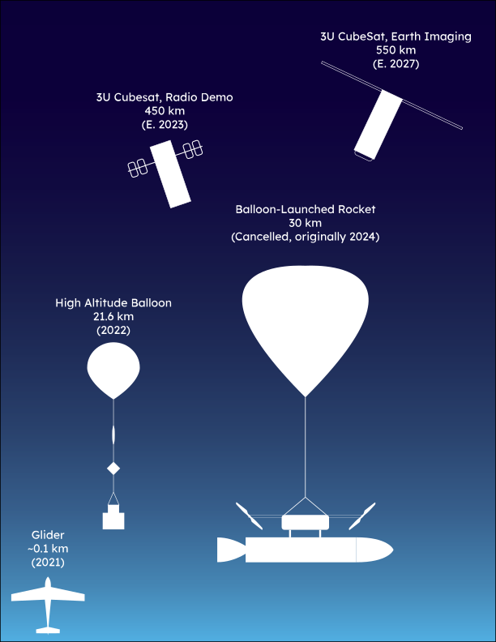

Hi, I'm Mingde.
I am an engineering student working on designing, optimizing, and controlling aerospace vehicles.
Download Resume (Feb 2023)
Areas of Interest and Proficiency
These are things that I am good at, and also enjoy doing.

Aerospace Vehicle Design and Simulation
I have multidisciplinary optimization (MDO) to design orbital launch vehicles. I have developed and simulated dynamic models of various aerospace vehicles ranging from gliders to satellites.

Check out my projects page to see how I made these cool animations!
The Sky is Not the Limit
I've worked on missions ranging from just above Earth's surface, to well above the edge of space. Whether it's aerodynamics or astrodynamics, I can do it.
